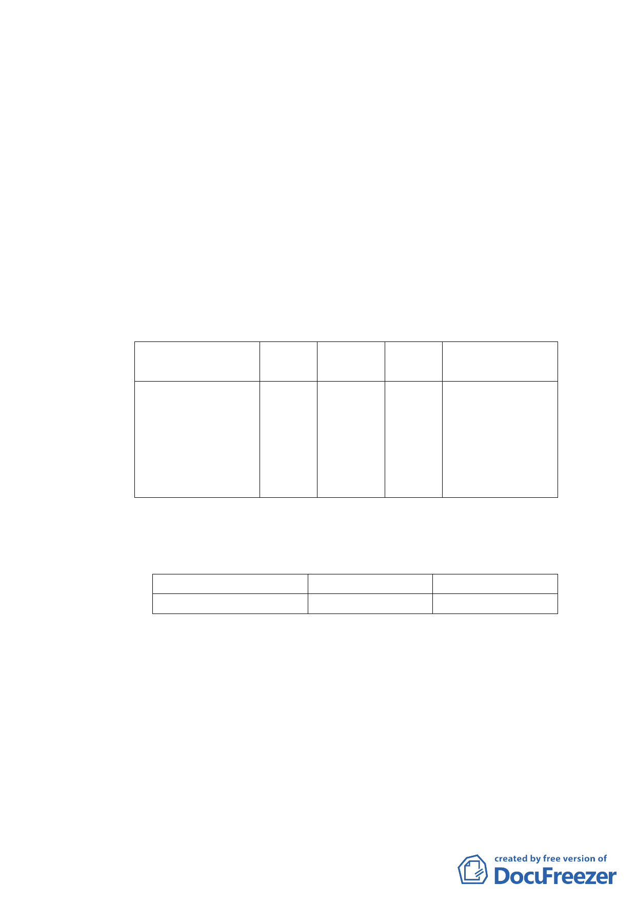

％。
（二） 土地使用現況
本計畫區內建物以住宅使用為主，區內計有九棟合
法建築物，皆為四層樓鋼筋混凝土造及加強磚造建築物，
總戶數為七十四戶，四層樓戶數佔區內總戶數比例為100
％，屋齡均逾三十年以上，建物老舊窳陋且無電梯及停車
空間之設置，結構上亦有耐震及防火安全的顧慮，故有待
透過都市更新加以改善，土地權屬均為私有。
四、 變更細部計畫內容：
（一）變更土地使用分區
位置
原計畫 新計畫
大安路一段206巷 第四種 第四種住
以南、大安路一段 住宅區 宅區(特)
以西、大安路一段
220巷以北及復興
南路一段279巷30
弄以東
面積 變更理由
（㎡）
3,048 配合「修訂臺北
市老舊中低層建
築社區辦理都市
更新擴大協助專
案計畫」，變更原
計畫內容。
（二）土地使用分區管制
1.使用強度
使用分區
第三種住宅區(特)
建蔽率
50％
容積率
300％
2.使用管制
本計畫範圍之第四種住宅區（特）（原屬第四種
住宅區）允許使用項目除分別比照「臺北市土地使用
分區管制自治條例」之第四種住宅區使用組別外，得
允許作「第十九組：一般零售業甲組」使用，不受「設
置樓層」及「面前道路寬度」核准條件之限制。
3.本計畫區不適用『臺北市建築物增設室內公共停車空間
-4-